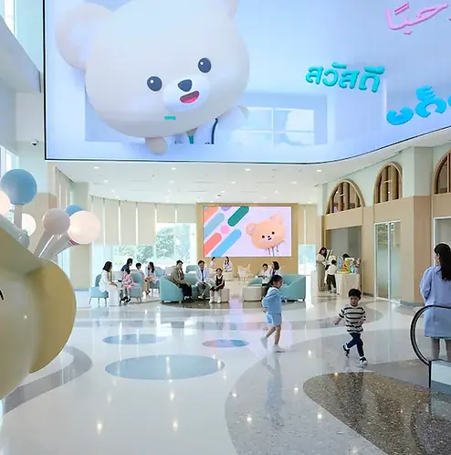

Medical Assistance
Connecting You With Trusted Care in Thailand.
Trusted Medical
Assistance for Expats in Thailand
Expatique assists expatriates in connecting with trusted hospitals, clinics, and healthcare professionals across Thailand. From specialist referrals to appointment coordination, we help make healthcare access simpler, faster, and less stressful.
Why Choose Expatique?
Need Medical Assistance in Thailand?
Let Expatique help connect you with trusted healthcare providers and simplify your healthcare journey in Thailand.
Free consultationPartner Hospitals in Thailand
Reliable Healthcare Coordination
Accessing the right medical support quickly can be critical, especially during unexpected situations.
Expatique assists expatriates in connecting with trusted hospitals, clinics, and healthcare professionals across Thailand. Whether you need help finding a qualified specialist, arranging medical appointments, or navigating healthcare services, our network can provide guidance and support.
In urgent situations or medical emergencies, we aim to help you reach the right professionals as quickly as possible, giving you and your family peace of mind when it matters most.
We collaborate with leading hospitals in Bangkok to provide trusted healthcare support for expatriates, international patients, travellers, and residents. Our partner hospitals offer comprehensive medical services, specialist consultations, preventive care, and insurance-supported treatments to ensure a smooth and reliable healthcare experience.
Get in Touch with UsPartnered Institutions
Samitivej Sukhumvit Hospital
A premier hospital in central Bangkok, trusted by expats for top medical care and treatments.
Samitivej Sukhumvit Hospital is one of Bangkok's leading private international hospitals, recognized for its advanced medical technology, experienced specialists, and high standards of patient care. Located in the Sukhumvit area, the hospital is highly trusted by expatriates and international families seeking quality healthcare services in Thailand.
Benefits
- International-standard healthcare services
- Multilingual doctors and medical staff
- Comprehensive specialist and wellness centers
- Convenient location in central Sukhumvit
- Strong support for international insurance providers
- Popular among expatriates and overseas patients
Not certain where to begin?
Schedule a consultation
Schedule a consultation to discuss your healthcare
needs and the medical support services available to you.
Samitivej Sriracha Hospital
A leading international hospital in Sriracha, trusted by expatriates, local families, and industrial professionals.
Samitivej Sriracha Hospital is a well-established private international hospital located in the heart of Sriracha, Chonburi. Known for its modern medical facilities, experienced specialists, and patient-centered care, the hospital serves both Thai and international patients, particularly expatriates and professionals working in the Eastern Economic Corridor (EEC).
Benefits
- International-standard healthcare services
- Multilingual doctors and medical staff
- Comprehensive specialist and wellness centers
- Convenient location in central Sriracha
- Strong support for international insurance providers
- Trusted by expatriates and industrial professionals in the Eastern region
Not certain where to begin?
Schedule a consultation
Schedule a consultation to discuss your healthcare
needs and the medical support services available to you.

Samitivej Srinakarin Hospital
Major full-service international hospital providing advanced healthcare across all specialties.
Samitivej Srinakarin Hospital is a major full-service international hospital offering advanced medical care across all specialties. It is also well known for its highly specialized pediatric services, including the Samitivej International Children's Hospital within its campus, making it a leading centre for both family healthcare and child-focused treatment.
Benefits
- Full-service international hospital with advanced medical technology
- Strong reputation for pediatric and child healthcare services
- Home to Samitivej International Children's Hospital
- Specialist centers covering major medical disciplines
- Family-friendly healthcare environment
- Trusted by both Thai and international patients
Not certain where to begin?
Schedule a consultationSamitivej Chinatown Hospital
Modern, Accessible Healthcare services in Central Bangkok.
Samitivej Chinatown Hospital provides accessible, modern healthcare services in central Bangkok. It is designed for convenience, offering professional medical care for both residents and international patients in a busy urban area.
Benefits
- Central location in Bangkok's Chinatown district
- Easy access for residents, travelers, and expats
- Modern diagnostic and treatment services
- Professional multilingual healthcare support
- Suitable for outpatient consultations and general care
- Efficient and patient-friendly service flow
Not certain where to begin?
Schedule a consultationSamitivej Chonburi Hospital
A trusted private hospital in Chonburi, delivering quality healthcare services with modern medical technology.
Samitivej Chonburi Hospital is a respected healthcare provider serving patients across Chonburi and the Eastern region of Thailand. The hospital is known for its experienced medical teams, advanced diagnostic technology, and comprehensive treatment services tailored to both local and international patients.
Benefits
- International-standard medical services
- Experienced doctors and specialist teams
- Modern diagnostic and treatment technology
- Comprehensive health check-up and wellness programs
- Convenient access for residents and industrial communities
- Support for local and international insurance providers
Not certain where to begin?
Schedule a consultation